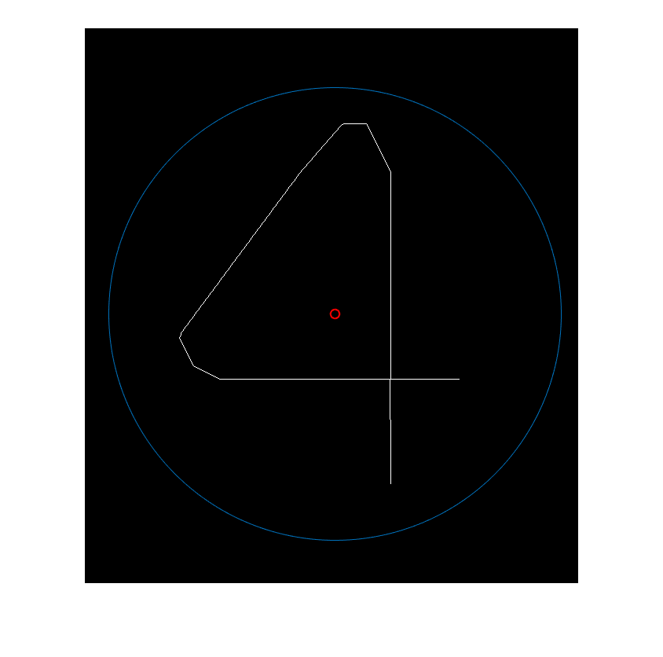

I = imread('4.png');
I = rgb2gray(I);
I = imbinarize(I);
I = imcomplement(I);
I = bwmorph(I,'thin',Inf);
filter = [1 1 1;
1 0 1;
1 1 1];
I_disconnect = I & ~(I & conv2(double(I), filter, 'same')>2);
cc = bwconncomp(I_disconnect);
numPixels = cellfun(@numel,cc.PixelIdxList);
[sorted_px, ind] = sort(numPixels);
threshold = 10;
for ii=ind(sorted_px < threshold)
cur_comp = cc.PixelIdxList{ii};
I(cur_comp) = 0;
full_cc = bwconncomp(I);
if full_cc.NumObjects>1
I(cur_comp) = 1;
end
end
I = bwmorph(I, 'spur');
dim = size(I);
row = 1;
col = 2;
N = 1;
distToOrigin_row = 0;
distToOrigin_col = 0;
for i = 1:dim(row)
for j = 1 : dim(col)
if (I(i,j)==1)
distToOrigin_row = distToOrigin_row + i;
distToOrigin_col = distToOrigin_col + j;
N = N + 1;
end
end
end
rowCenter = round(distToOrigin_row/N);
colCenter = round(distToOrigin_col/N);
center = [rowCenter,colCenter];
reCenterDist = [ dim(row)/2 - rowCenter, dim(col)/2 - colCenter];
I = circshift(I,reCenterDist);
N = 1;
position = zeros(10000,2);
for i = 1:dim(row)
for j = 1 : dim(col)
if (I(i,j)==1)
position(N,row) = i;
position(N,col) = j;
N = N + 1;
end
end
end
position(position==0) = [];
position = reshape(position,2,[])';
r = 0;
for i = 1:N
vecSub = position(i) - center;
r = r + dot(vecSub,vecSub);
end
r = round(sqrt(r/N));
figure;
imshow(I);
hold on
plot(colCenter,rowCenter,'ro');
t = linspace(0,2*pi,1000);
scale = 2;
x = colCenter + scale*r*sin(t);
y = rowCenter + scale*r*cos(t);
line(x,y)
axis equal
